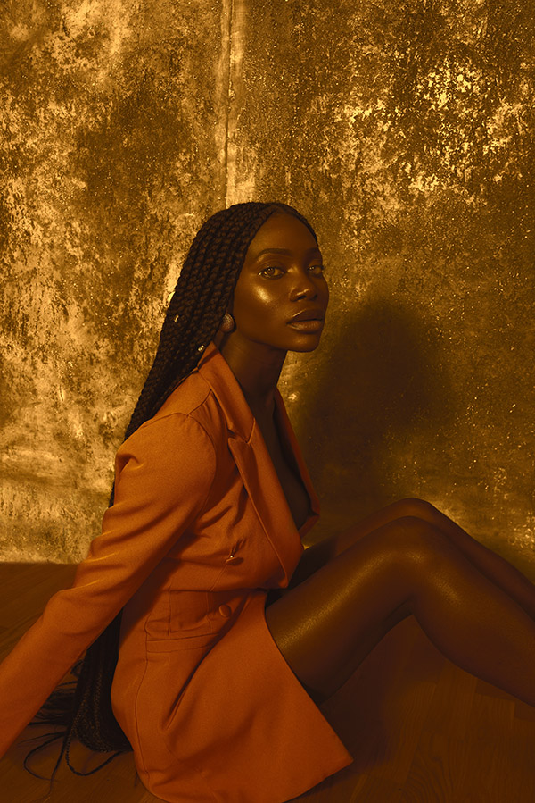
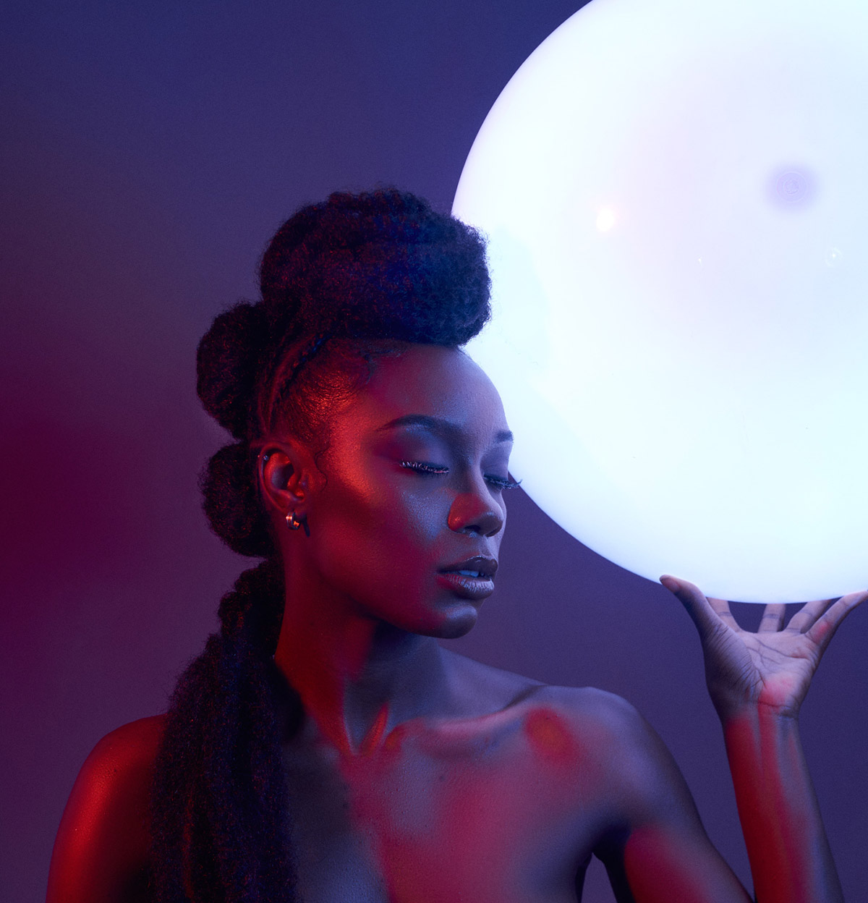

I find my favorite types of images are black and white. I feel even an ordinary picture made black and white turns more interesting when it comes to black and white.


There is something fun when it comes to manipulating colors in photos. I genuinely feel I'm creating art when I do my color edits.
 